After completing this lesson, students will be able to:
understand the nature and the effects of heat.
differentiate the conducting powers of various substances.
list out good and bad conductors of heat and their uses.
explain conduction using kinetic theory.
describe the experiments to show convection in fluids.
understand the concept of radiation.
define specific heat capacity and thermal capacity.`
describe the concept of change of state
define specific latent heat of fusion and specific latent heat of vaporisation.
All substances in our surrounding are made up of molecules. These molecules are generally at motion and posses kinetic energy. At the same time each molecule exerts a force of attraction on other molecules and so they posses potential energy. The sum of the kinetic and potential energy is called the internal energy of the molecules. This internal energy, when flows out, is called heat energy. This energy is more in hot substances and less in cold substances and flows from hot substances to cold substances. In this lesson you will study about how this heat transfer takes place. Also you will study about the effect of heat, heat capacity, change of state and latent heat.
When a substance is heated, the following things can happen.
Expansion: When heat is added to a substance, the molecules gain energy and vibrate and force other molecules apart. As a result, expansion takes place. You would have seen some space being left in railway tracks. It is because, during summer time, more heat causes expansion in tracks. Expansion is greater for liquids than solids and it is maximum in gases
Figure 7.1 Gap in railway track image was given below
Change in State: When you heat ice cubes, they become water and water on further heating changes into vapour. So, solid becomes liquid and liquid becomes gas, when heat is added. The reverse takes place when heat is removed.
Change in Temperature: When heat energy is added to a substance, the kinetic energy of its particles increases and so the particles move at higher speed. This causes rise in temperature. When a substance is cooled, that is, when heat is removed, the molecules lose heat and its temperature falls.
Chemical changes: Since heat is a form of energy it plays a major role in chemical changes. In some cases, chemical reactions need heat to begin and also heat determines the speed at which reactions occur. When we cook food, we light the wood and it catches fire and the food particles become soft because of the heat energy. These are all the chemical changes taking place due to heat.
Box item open
Activity 1
Take a glass of water and put some ice cubes into it. Observe it for some time. What happens question mark The ice cubes melt and disappear. Why did it happen question mark It is because heat energy in the water is transferred to the ice.box item ends
Heat does not stay where we put it. Hot things get colder and cold things get hotter. Heat is transferred from one place to another till their temperatures become equal. Heat transfer takes place when heat energy flows from an object with higher temperature to an object with lower temperature Bracket OPEN Figure 7.2 bracket closed.
Figure 7.2 Hot and cold surroundings image was given below
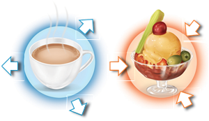
Cooler Surroundings Warmer Surroundings
Box item open
When a dog keeps out its tongue and breathes hard, the moisture on the tongue turns into water and it evaporates. Since, heat energy is needed to turn a liquid into a gas, heat is removed from dog’s tongue. This helps to cool the body of the dog. box item ends
Heat transfer takes place in three ways:
1. Conduction,
2. Convection,
3. Radiation
In solids, molecules are closely arranged so that they cannot move freely. When one end of the solid is heated, molecules at that end absorb heat energy and vibrate fast at their own positions. These molecules in turn collide with the neighbouring molecules and make them vibrate faster and so energy is transferred. This process continues till all the molecules receive the heat energy.
The process of transfer of heat in solids from a region of higher temperature to a region of lower temperature without the actual movement of molecules is called conduction.
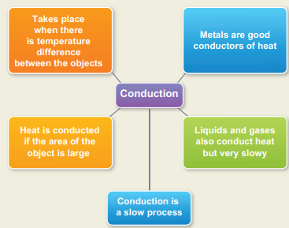
Conduction in daily life
1. Metals are good conductors of heat. So, aluminium is used for making utensils to cook food quickly.
2. Mercury is used in thermometers because, it is a good conductor of heat.
3. We wear woollen clothes is winter to keep ourselves warm. Air, which is a bad conductor, does not allow our body heat to escape.
Box item open
Take metal rods of copper, aluminium, brass and iron. Fix a match stick to one end of each rod using a little melted wax. When the temperature of the far ends reach the melting point of wax, the matches drop off. It is observed that the match stick on the copper rod would fall first, showing copper as the best conductor followed by aluminum, brass and iron. box item ends
Box item open
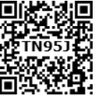
Drop a few crystals of potassium permanganate down to the bottom of a beaker containing water. When the beaker is heated just below the crystals, by a small flame, purple streaks of water rise upwards and fan outwards. box item ends
In this activity, water molecules at the bottom of the beaker receive heat energy and move upward and replace the molecules at the top. Same thing happens in air also. When air is heated, the air molecules gain heat energy allowing them to move further apart. Warm air being less dense than cold air will rise. Cooler air moves down to replace the air that has risen. It heats up, rises and is again replaced by cooler air, creating a circular flow.
Figure 7.3 Convection in air image was given below
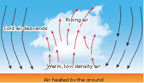
Convection is the flow of heat through a fluid from places of higher temperature to places of lower temperature by movement of the fluid itself.
Hot air balloons: Air molecules at the bottom of the balloon get heated by a heat source and rise. As the warm air rises, cold air is pushed downward and it is also heated. When the hot air is trapped inside the balloon, it rises.
Figure 7.4 Hot air balloon image was given below
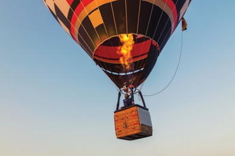
Breezes: During day time, the air in contact with the land becomes hot and rises. Now the cool air over the surface of the sea replaces it. It is called sea breeze. During night time, air above the sea is warmer. As the warmer air over the surface of the sea rises, cooler air above the land moves towards the sea. It is called land breeze.
Figure 7.5 Land breeze and sea breeze image was given below
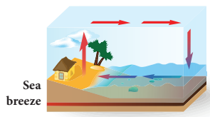
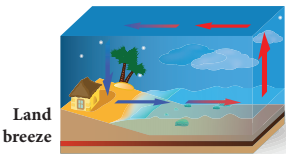
Winds: Air flows from area of high pressure to area of low pressure. The warm air molecules over hot surface rise and create low pressure. So, cooler air with high pressure flows towards low pressure area. This causes wind flow.
Chimneys: Tall chimneys are kept in kitchen and industrial furnaces. As the hot gases and smoke are lighter, they rise up in the atmosphere.
Radiation is a method of heat transfer that does not require particles to carry the heat energy. In this method, heat is transferred in the form of waves from hot objects in all direction. Radiation can occur even in vacuum whereas conduction and convection need matter to be present. Radiation consists of electromagnetic waves travelling at the speed of light. Thus, radiation is the flow of heat from one place to another by means of electromagnetic waves.
Transfer of heat energy from the sun reaches us in the form of radiation. Radiation is emitted by all bodies above 0 K. Some objects absorb radiation and some other objects reflect them
Box item open
While firing wood, we can observe all the three ways of heat transfer. Heat in one end of the wood will be transfered to other end due to conduction. The air near the wood will become warm and replace the air above. This is convection. Our hands will be warm because heat reaches us in the form of radiation box item ends
1. White or light coloured clothes are good reflectors of heat. They keep us cool during summer.
2. Base of cooking utensils is blackened because black surface absorbs more heat from the surrounding.
3. Surface of airplane is highly polished because it helps to reflect most of the heat radiation from the sun.
Temperature is the degree of hotness or coolness of a body. Hotter the body, higher is its temperature.
The SI unit of temperature is kelvin Bracket OPEN K bracket closed. For day to day applications, Celsius Bracket OPEN degree C bracket closed is used. Temperature is measured with a thermometer.
There are three scales of temperature.
1. Fahrenheit scale
2. Celsius or Centigrade scale
3. Kelvin or Absolute scale
In Fahrenheit scale, 32 degree F and 212 degree F are the freezing point and boiling point respectively. Interval has been divided into 180 parts.
In Celsius scale, also called centigrade scale, 0°C and 100 °C are the freezing point and boiling point respectively. Interval has been divided into 100 parts. The formula to convert a Celsius scale to Fahrenheit scale is
F = 9 by 5 C plus 32
The formula for converting a Fahrenheit scale to Celsius scale is:
C = 5 by 9 bracket open f minus 32 bracket closed
Kelvin scale is known as the absolute scale. On the Kelvin scale 0 K represents absolute zero, the temperature at which the molecules of a substance have their lowest possible energy. The solid, liquid, gaseous phases of water can coexist in equilibrium at 273.16 K. Kelvin is defined as 1 by 273.16 of the triple point temperature. The formula for converting a Celsius scale to Kelvin scale is: K = C plus 273.15
Figure 7.6 Types of temperature scales image was given below
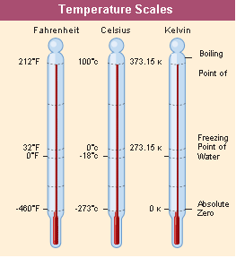
The temperature at which the pressure and volume of a gas theoretically reaches zero is called absolute zero. This is shown in Figure 7.7.
Figure 7.7 Variation of pressure Bracket OPEN P bracket closed with temperature Bracket OPEN T bracket closed.image was given below
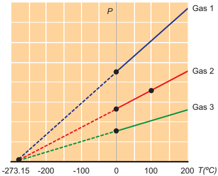
For all gases, the pressure extrapolates to zero at the temperature minus 273.15 degree C. It is known as absolute zero or 0 K. Some base line temperatures in the three temperature scales are shown in Table 7.1. Table.
Table 7.1 Baseline temperatures in three scales
Temperature |
Kelvins Bracket OPEN K bracket closed |
Degrees Celcius °C bracket closed |
Degrees Fahrenheit Bracket OPEN °F bracket closed |
Boiling point of water |
373.15 |
100 |
212 |
Melting point of ice |
273.15 |
0 |
32 |
Absolute zero |
0 |
Minus 273 |
Minus 460 |
Box item open
Convert the following
Roman 1. 25 degree C to Kelvin
Roman 2. 200 K to degree C
Solution:
Roman 1. T subscript of k = T degree C plus 273.15
T subscript k = 25 plus 273.15 = 298.15 K
Roman 2. T degree subscript of C = T subscript of k minus 273.15
T degree subscript of C = 200 minus 273.15 = minus 73.15 degree C
Box item ends
Box item open
Convert the following
Roman 1 35 degree C to Fahrenheit Bracket OPEN degree F bracket closed
Roman 2. 14 degree F to degree C
Solution:
Roman 1. T degree F = T degree subscript of C × 1.8 plus 32
T degree F = 25 degree C × 1.8 plus 32 = 77 degree F
Roman 2.T degree C = T degree F minus 32 by 1.8
T degree C = 14 degree F minus 32 by 1.8 = minus 10 degree C
Box item ends
You might have felt that the land is cool in the morning and hot during day time. But, water in a lake will be almost at a particular temperature both in the morning as well as in the afternoon. Both are subjected to same amount of heat energy from the Sun, but they react differently. It is because both of them have different properties. In general, the amount of heat energy absorbed or lost by a body is determined by three factors.
1. Mass of the body
2. Change in temperature of the body
3. Nature of the material of the body
We can understand this from the following observations.
Observation: 1
Quantity of heat required to raise the temperature of 1 litre of water will be more than the heat required to raise the temperature of 500 ml of water. If Q is the quantity of heat absorbed and m is the mass of the body, then Q is directly proportional to m Bracket OPEN 7.1 bracket closed
Observation: 2
Quantity of heat energy Bracket OPEN Q bracket closed required to raise the temperature of 250 ml of water to 100°C is more than the heat energy required to raise the temperature to 50 degree C. Here, Q is directly proportional to delta T, where delta T is the change in temperature of the body.
Thus, heat lost or gained by a substance when its temperature changes by delta T
Is Q is directly proportional to m delta T
Q = m C delta T Bracket OPEN 7.2 bracket closed
From the above equations, the absolute temperature and energy of a system are proportional to each other. The proportionality constant is the specific heat capacity Bracket OPEN C bracket closed of the substance.
Therefore C = Q by m delta T
Thus, specific heat capacity of a substance is defined as the amount of heat required to raise the temperature of 1 kg of the substance by 1 degree C or 1 K. The SI unit of specific heat capacity is J kg power minus 1 K power minus 1. The most commonly used units of specific heat capacity are J by kg degree C and J by g degree C.
Among all the substances, water has the highest specific heat capacity and its value is 4200 J by kg degree K. So, water absorbs a large amount of heat for unit rise in temperature. Thus, water is used as a coolant in car radiators and factories to keep engines and other machinery parts cool. It is because of this same reason, temperature of water in the lake does not change much during day time.
Box item open
Calculate the heat energy required to raise the temperature of 2 kg of water from 10 degree C to 50 degree C. Specific heat capacity of water is 4200 J Kg power minus 1 K power minus 1.
Solution:
Given m = 2 Kg, delta T = Bracket OPEN 50 degree minus 10 degree bracket closed = 40 °C In terms of Kelvin,
delta T = Bracket OPEN 323.15 minus 283.15 bracket closed = 40K,
C = 4200 J Kg power minus 1 K power minus 1
Therefore Heat energy required, Q = m × C × delta T = 2 × 4200 × 40 = 336,000 J box item ends
Box item open
Water in its various form, has different specific heat capacities.
Water Bracket OPEN Liquid state bracket closed = 4200 J Kg power minus 1 K power minus 1
Ice Bracket OPEN Solid state bracket closed = 2100 J Kg power minus 1 K power minus 1
Steam Bracket OPEN Gaseous state bracket closed= 460 J Kg power minus 1 K power minus 1 box item ends
Now, you are familiar with specific heat capacity. It is the heat required to raise the temperature of a unit mass of a body by 1 degree C. But, heat capacity is the heat required to raise the temperature of the entire mass of the body by 1 degree C. Thus, heat capacity or thermal capacity is defined as the amount of heat energy required to raise the temperature of a body by 1 degree C. It is denoted by C.
Heat Capacity = Quantity of heat required by Raise in Temperature
C power 1 = Q by T
SI unit of heat capacity is J by K. It is also expressed in cal by degree C, k cal by degree C or J by degree C.
Box item open
An iron ball requires 5000 J heat energy to raise its temperature by 20K. Calculate the heat capacity of the iron ball.
Solution:
Given, Q = 5000 J, delta T = 20 K
Heat Capacity, C = Heat energy required Q by Rise in temperature delta T= 5000 by 20 = 250 J K power minus 1 box item ends
The process of changing of a substance from one physical state to another at a definite temperature is known as change of state.
For example, water molecules are in liquid state at normal temperature. When water is heated to 100 degree C it becomes steam which is a gaseous state of matter. On reducing the temperature of the steam it becomes water again. If we reduce the temperature further to 0°C, it becomes ice which is a solid state of water. Ice on heating, becomes water again. Thus, water changes its state when there is a change in temperature. There are different such processes in the change of state in matter. Figure 7.8 shows various processes of change of state.
Figure 7.8 Change of state of matter image was given below
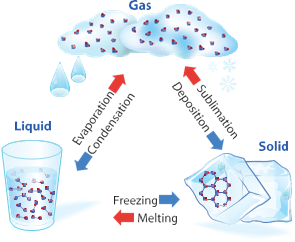
The process in which a solid is converted to liquid by absorbing heat is called melting or fusion. The temperature at which a solid changes its state to liquid is called melting point. The reverse of melting is freezing. The process in which a liquid is converted to solid by releasing heat is called freezing. The temperature at which a liquid changes its state to solid is called freezing point. In the case of water, melting and freezing occur at 0 degree C.
The process in which a liquid is converted to vapor by absorbing heat is called boiling or vaporization. The temperature at which a liquid changes its state to gas is called boiling point. The process in which a vapor is converted to liquid by releasing heat is called condensation. The temperature at which vapour changes its state to liquid is called condensation point. Boiling point as well as condensation point of water is 100 degree C.
Some solids like dry ice, iodine, frozen carbon dioxide and naphthalene balls change directly from solid state to gaseous state without becoming liquid. The process in which a solid is converted to gaseous state is called sublimation.
Various stages of conversion of state of matter by heat with the corresponding change in temperature is shown in Figure 7.9
Figure 7.9 Various stages of conversion of state of matter image was given below
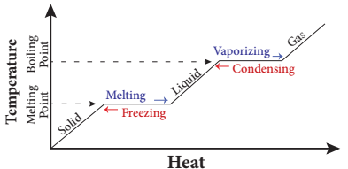
The word, ‘latent’ means hidden. So, latent heat means hidden heat or hidden energy. In order to understand latent heat, let us do the activity given below.
Box item open
Take some crushed ice cubes in a beaker and note down the temperature using thermometer. It will be 0°C. Now heat the ice in the beaker. You can observe that ice is melting to form water. Record the temperature at regular intervals and it will remain at 0°C until whole ice is converted to liquid. Now heat the beaker again and record the temperature. You can notice that the temperature will rise up to 100 °C and it will retain the same even after continuous heating until the whole mass of water in the beaker is vaporized. box item ends
In the above activity, temperature is constant at 0°C until entire ice is converted into liquid and again constant at 100°C until all the ice is converted into vapor. Why question mark It is because, when a substance changes from one state to another, a considerable amount of heat energy is absorbed or liberated. This energy is called latent heat. Thus, latent heat is the amount of heat energy absorbed or released by a substance during a change in its physical states without any change in its temperature.
Figure 7.10 Latent heat image was given below
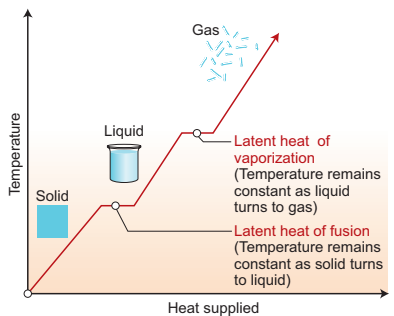
Heat energy is absorbed by the solid during melting and an equal amount of heat energy is liberated by the liquid during freezing, without any temperature change. It is called latent heat of fusion. In the same manner, heat energy is absorbed by a liquid during vaporization and an equal amount of heat energy is liberated by the vapor during condensation, without any temperature changes. This is called latent heat of vaporization.
Latent heat, when expressed per unit mass of a substance, is called specific latent heat. It is denoted by the symbol L. If Q is the amount of heat energy absorbed or liberated by ‘m’ mass of a substance during its change of phase at a constant temperature, then specific latent heat is given as L = Q by m.
Thus, specific latent heat is the amount of heat energy absorbed or liberated by unit mass of a substance during change of state without causing any change in temperature. The SI unit of specific latent heat is J by kg
Box item open
How much heat energy is required to melt 5 kg of ice question mark Bracket OPEN Specific latent heat of ice = 336 J g power minus 1 bracket closed
Solution:
Given, m = 5 Kg = 5000 g, L = 336 J g power minus 1
Heat energy required = m into L
= 5000 into 336
= 1680000 J or 1.68 into 10 power 6 J box item ends
How much boiling water at 100°C is needed to melt 2 kg of ice so that the mixture which is all water is at 0°C question mark
[Specific heat capacity of water = 4.2 J Kg power minus 1 and Specific latent heat of ice = 336 Jg power minus 1].
Solution:
Given, mass of ice = 2 kg = 2000 g.
Let ‘m’ be the mass of boiling water required.
Heat lost = Heat gained.
m into c into delta t = m into L
m into 4.2 into Bracket OPEN 100 minus 0 bracket closed = 2000 into 336
m = 2000 into 336 by 4.2 into 100
= 1600 g or 1.6 kg box item ends
Heat is transferred from hot region to cold region.
Heat is transferred in three forms: conduction, convection and radiation.
Conduction takes place in solids and convection takes place in liquids and gases.
Radiation takes place in the form of electromagnetic waves.
There are three scales of temperature: Fahrenheit scale, Celsius or Centigrade scale and Kelvin or Absolute scale.
Amount of heat energy absorbed or lost by a body is determined by three factors: mass of the body, change in temperature of the body, nature of the material of the body.
The SI unit of specific heat capacity is J kg power minus 1 K power minus 1
Among all the substances, water has the highest specific heat capacity.
SI unit of heat capacity is J by K.
Depending upon the temperature, pressure and transfer of heat, matter is converted from one state to another
Conduction
Process of transfer of heat in solids from a region of higher temperature to a region of lower temperature without the actual movement of molecules.
Convection
Flow of heat through a fluid from places of higher temperature to places of lower temperature by movement of the fluid itself.
Radiation
Flow of heat from one place to another by means of electromagnetic waves.
Temperature It is the degree of hotness or coolness of a body.
Specific heat capacity
The amount of heat required to raise the temperature of 1 kg of the substance by 1 by degree C or 1 K.
Heat capacity
The amount of heat energy required to raise the temperature of a body by 1°C.
Melting or fusion Process in which a solid is converted to liquid by absorbing heat.
Freezing Process in which a liquid is converted to solid by releasing heat.
Vaporization Process in which a liquid is converted to vapour by absorbing heat.
Condensation Process in which a vapor is converted to liquid by releasing heat.
Latent heat
Amount of heat energy absorbed or released by a substance during a change in its physical state without any change in its temperature.
Specific latent heat
Amount of heat energy absorbed or liberated by unit mass of substance during change of state without causing any change in temperature.
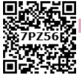